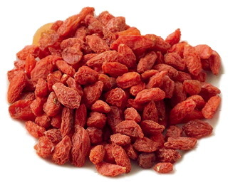
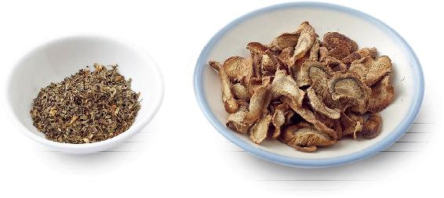
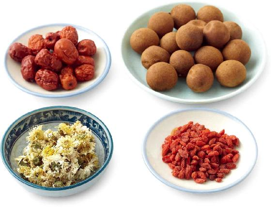
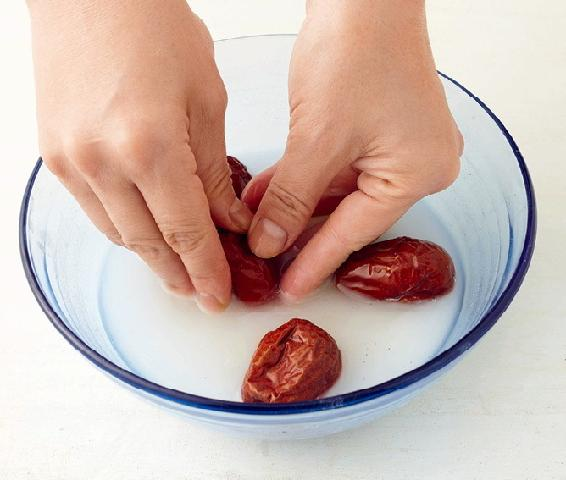
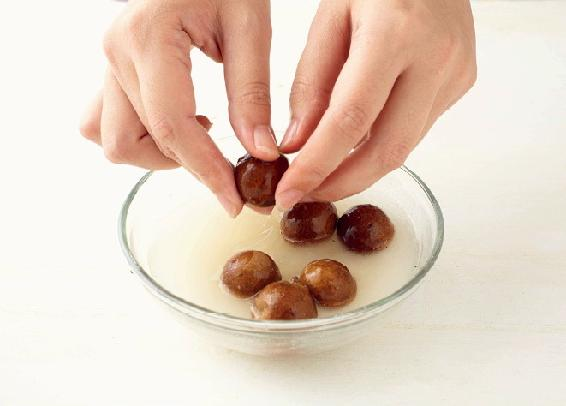
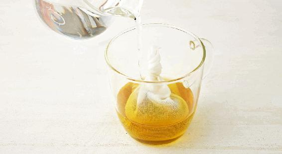
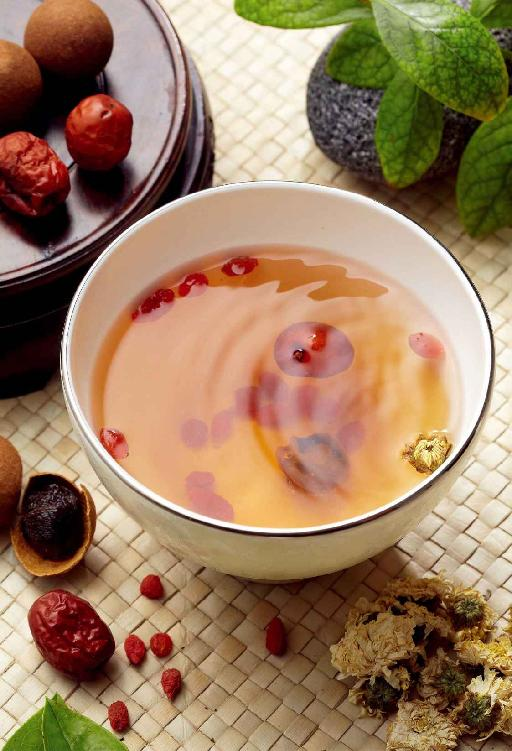
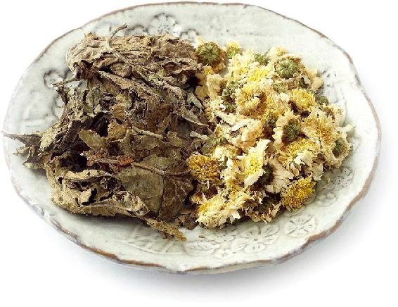
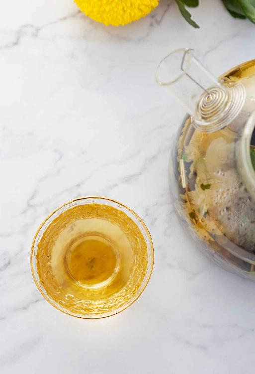

“久视伤血”，用眼过度、眼部供血不足，眼睛就会疲劳干涩。久而久之，眼睛就缺乏神采。
我们可以用桂圆、红枣、枸杞子搭配来滋养眼睛，用菊花作为药引。
菊花可以清肝明目，它能引药上行，调理眼睛的问题。
【原料】
带壳干桂圆60粒、红枣40个、枸杞子50克、菊花20朵。
【做法】
【功效】




允斌叮嘱
——大声说爱
——25群读者

眼睛经常发红、易感染红眼病的人，是风热引起的，可以喝桑菊明目饮来疏风清热。
喝之前，可以让双眼接近茶杯口，让茶的蒸汽熏蒸双眼，会感到舒服一些。
【原料】
干桑叶（霜桑叶）50克、菊花50克。
【做法】
【功效】

允斌叮嘱
如果接触过红眼病患者，为预防传染，可以一次用5包桑菊明目饮，配15克青皮和陈皮泡茶来喝。
读者评论
桑菊明目饮，喝好了我的眼睛发红、怕光、流泪。
——健康是福
Donna问：老师，是用春桑叶还是霜桑叶，还是两者都可以呢？
允斌答：桑叶入药如没有特别标注，都是用霜桑叶。桑叶，嫩时营养丰富，经霜后药效足，入药以老而经霜者为佳。
